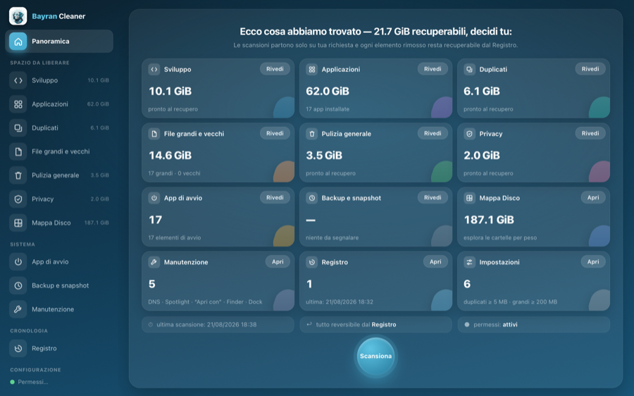
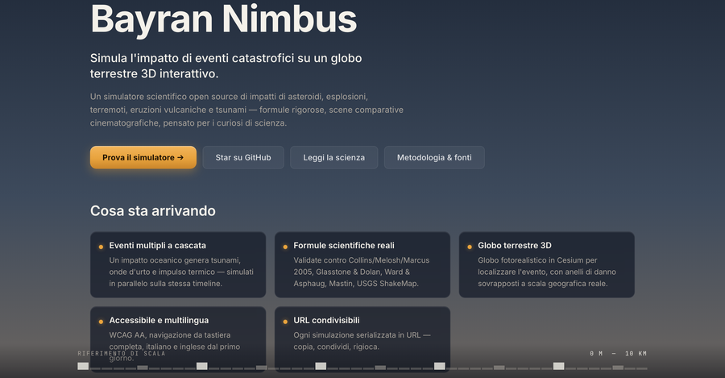

Bayran Cleaner
Pulizia onesta per il tuo Mac.
macOS · gratuito
Vai →
Bayran Office
I tuoi documenti. Solo tuoi.
iOS · Android
Vai →

Bayran Nimbus
Simula eventi catastrofici su un globo 3D.
Web
Vai →